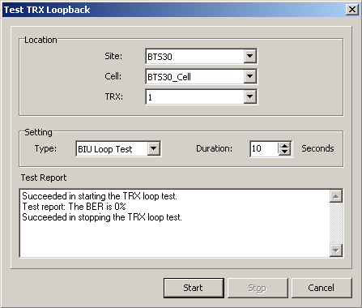

This describes how to test the TRX loopback to learn the TRX performance and channel transmission. The TRX loopback test consists of BIU loop test and TRX self loop test.
Prerequisites
- The LMT runs normally.
- The communication between the LMT and the BSC is normal.
- The communication between the BSC and the BTS is normal.
Context
The TRX loopback test consists of BIU Loop Test and TRX Self Loop Test.
- BIU Loop Test: tests the link transmission of the TRX timeslots on the DBUS. The TRX sends the signaling channel data to the signaling timeslots of the DBUS in the BTS. Through the TMU loopback, the TRX receives the signaling channel data sent by itself. The TRX compares the data and reports the bit error rate. This test shows the quality of the signaling channel on the DBUS in the BTS.
- TRX Self Loop Test: tests the TRX conditions. The test is done by the TRX itself; you need not enter the Duration.
Procedure
- Through GUI
- Choose .
- Set Location and Setting, and then click Start. The results are displayed, as shown in Figure 1.
Figure 1 Testing TRX loopback

- Click Stop.
- Through MML
- You can run the following commands on the LMT to test the TRX loopback.
- Run the STR BTSTST command to start testing the TRX loopback.
- Run the STP BTSTST command to stop testing the TRX loopback.
Copyright © Huawei Technologies Co., Ltd.